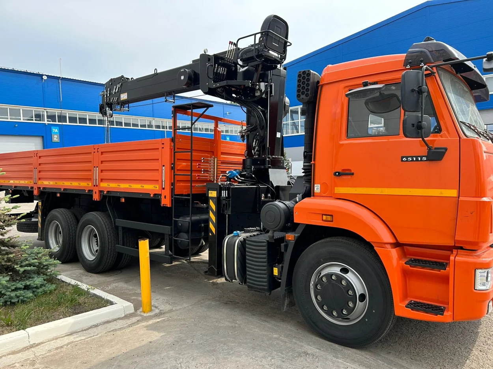
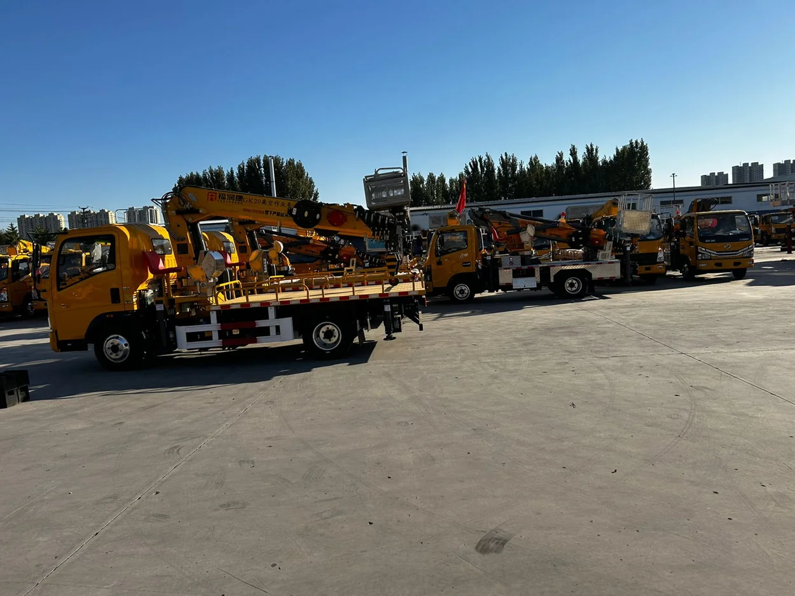

Как выбрать кран-манипулятор под свой груз
Одна и та же КМУ поднимает разный вес у борта и на дальнем вылете. Для подбора установки понадобятся масса груза, расстояние до точки разгрузки и данные шасси.

Начните с точки разгрузки
Предположим, палету нужно поставить за ограждением. Запишите массу палеты с грузом и измерьте горизонтальное расстояние от оси вращения крана до места установки. По этим двум значениям найдите рабочую точку на грузовой диаграмме конкретной модели. Максимальная грузоподъёмность в названии КМУ обычно относится к короткому вылету.

Выберите конструкцию стрелы
При опускании груза в траншею удобен крюк на тросе. Лебёдка позволяет менять высоту крюка при неподвижной стреле. Шарнирно-сочленённая стрела удобна при работе рядом со зданием. Если планируете работать с захватом или буром, проверьте совместимость навесного оборудования с выбранной установкой.

Согласуйте кран и шасси
Для городских доставок важны габариты машины и место для манёвра. Для стройплощадки учитывайте подъезд и возможность выставить опоры. Попросите поставщика указать полезную нагрузку готового автомобиля с установленными краном и кузовом. Она определяет, какой груз машина сможет увезти после погрузки.